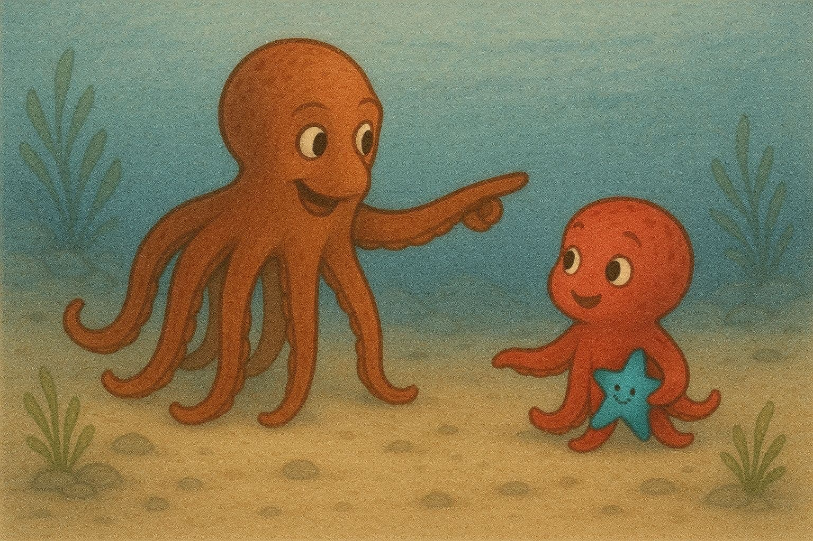

Crimson Project

Crimson is engineered to be a high-performance Object Storage Daemon (OSD) optimized for fast storage devices such as NVMe. By leveraging the random I/O capabilities and high throughput of modern hardware, Crimson aims to deliver exceptional speed and efficiency.
To achieve these objectives, Crimson is built from the ground up using cutting-edge technologies including SPDK, DPDK and the C++ Seastar framework. Key elements of Crimson are:
Kernel Bypass: Direct communication with networking and storage devices that support polling, eliminating the overhead of kernel involvement.
Shared-Nothing Architecture: Minimizes lock contention, ensuring smoother operation and higher performance.
Computational Efficiency: Balances load across multi-core systems, enabling each core to handle the same volume of I/O with reduced CPU usage.
Crimson will serve as a drop-in replacement for the classic Object Storage Daemon (OSD). Our long-term vision is also to completely redesign the object storage backend, which we have named Seastore. This new backend is tailored for fast storage devices like NVMe and may not be optimal for HDDs.
Since Seastore is still in its early stages, we are adapting BlueStore to work with Crimson-OSD for testing and development purposes. If Seastore proves incompatible with HDDs, we may continue to maintain BlueStore within Crimson to support HDDs.
The new Crimson OSD will be compatible with the classic OSD, allowing existing users to upgrade seamlessly. Specifically, Crimson-OSD will:
- Support the librados protocol: Able to communicate with existing librados clients
- Integrate into existing Ceph clusters as an OSD
- Support most existing OSD commands
Crimson OSD Status: ¶
As Crimson is in under active development not all not featurewise on par with its predecessor yet.
Crimson OSD currently supports:
- Librados operations including snap support
- Log Based recovery and Backfill
- RBD workloads on Replicated pools
- Bluestore, Seastore and cyanstore (memory-based) object store backends
- Deployment via Cephadm
- Initial Scrub Support
- Multi-Core Messenger OSD Objectstore architecture support.
Work in progeress:
- EC pools
- Auto-Scaling Placement Groups - Splits/Merges
- Object gateway (RGW)
- MClock OSD scheduler
- Background Scrub Scheduling
- Replace the default object store to SeaStore
Seastore Object Store Status: ¶
SeaStore is the second half of the Crimson project. While the first part focuses on implementing a modern OSD, SeaStore is the native ObjectStore solution for Crimson OSD, which is developed with the Seastar framework and adopts the same design principles. Although challenging, there are multiple reasons why Crimson must build a new local storage engine. Storage backend is the major CPU resource consumer, and the Crimson OSD cannot truly scale with cores if its storage backend cannot.
SeaStore currently supports:
- Most of the ObjectStore transactional interfaces operating rados objects, including read, write and clone
- Most of the necessary background cleaning tasks
- Segmented backend optimized for sequential writes
- Random-block backend optimized for random writes
- ZNS devices
- Device tiering for better storage efficiency
- Multi-core architecture
- Profiling through metrics, admin socket commands or logs
Work in progress:
- LBA iterative interface with cursor
- Clonerange2 OSD operation support
- Omap iterate interface
- More efficient device tiering
- Extend logical address width and redesign hints
- Performance optimizations to the B+ trees (onode, omap, lba)
- Lookup fast paths based on heterogeneous data structures
Future work:
- Performance optimizations to reduce write amplification and control internal starvations
- Support number of core changes
- Rebalance disk usage between shards
- Device tiering with random block backend
- Random block background defragmentation
- Block-based read checksum support
- Offline tools whatever necessary
- Better unit test coverage and simplify time-consuming tests
- Compression, hardware offloading, etc
CI Test Coverage and Performance Review ¶
The crimson-rados suite keeps growing, stabilized and is used to gate PRs merges and prevent regressions. The suite also includes performance tests which are driven by CBT. Besides PR gating, the suite is set to run twice a week. See all recent runs.
Future work will involve updating the test suite and test cases, adding CI reviewing performance to identify regressions and comparing the performance of classic OSD and crimson-osd on a monthly basis.
Useful Project Links: ¶
- Github's Projects
- Tracker
- Docs
- Slack - #crimson
Blog Posts: ¶
Talks: ¶
- Cephalocon 2024 - Crimson Squid Project Update
- Cephalocon 2023 - Crimson Reef Project Update
- From Classical to the Future
- Understanding SeaStore through profiling
- Ceph Virtual 2022 - What's new with Crimson and Seastore?
- Ceph Month 2021: Crimson Update
- Rebuilding a Faster OSD with Future
- Vault '20 - Crimson: A New Ceph OSD for the Age of Persistent Memory and Fast NVMe Storage
- A Glimpse of the New Ceph Messenger Built on Seastar
- Error handling in a futurized environment
- Rebuilding the Ceph Distributed Storage Solution with Seastar